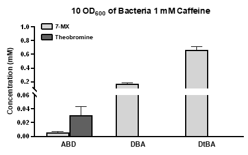

This section presents a comprehensive description of the data collected in the period of our
project,
encompassing the
evidence that substantiates our hypothesis.
Pathway construction and optimization
Overview:
In order to obtain an engineered strain that could produce 7-methylxanthine (7-MX), we
employed relevant
genes in the
NDM enzyme system of Pseudomonas CBB5.1 Three different plasmids were constructed (Fig. 1).
The caffeine
metabolic
pathway was transformed into E. coli BW25113, enabling it to convert caffeine to 7-MX. We
compared the
yields of the
three strains under the same induction conditions and evaluated the whole-cell biocatalysis
conditions.
Among them, the
DtBA strain exhibited the highest yield of 7-MX production, which was 0.655 mM (Fig. 2).
Details:
In order to obtain an engineered strain that could produce 7-MX, we constructed three
different plasmids
using the
relevant genes in the NDM enzyme system of Pseudomonas CBB5 (Fig. 1).1
In the NDM enzyme system, NdmA and NdmB are Rieske [2Fe-2S] non-heme iron monooxygenases,
and NdmD is a
NADH-dependent
reductase. The demethylation reaction relies on the reducing power provided by NdmD. We
designed the ABD
circuit based
on the arrangement of these genes in the genome of the original species. However, the
expression level
of the ndmD was
modest in the ABD strain. Therefore, we further constructed the DBA circuit and used the
pBAD promoter
to drive its
expression. Next, we predicted that the N-terminal 266 amino acids of NdmD were likely
dispensable to
its function in
our system, but exerted adverse pressure to cell growth.1 Therefore, we designed an NdmD’s
truncated
mutant DtBA to
fulfil its activity.
Conclusion:
We individually transformed the three plasmids into E. coli BW25113, and compared their
efficiencies in
converting
caffeine to 7-MX. We induced these three strains under the same conditions (30℃, 18 h, with
0.2%
arabinose and 1 mM
IPTG), followed by the whole- cell catalysis (with 10 OD600 of bacteria and 1 mM caffeine as
the
substrate).
High-performance liquid chromatography (HPLC) was utilized to detect their yields of 7-MX
production.
Among them, the
DtBA strain exhibited the highest yield, which was 0.655 mM of 7-MX (Fig. 2).
Figure 1. A. The ABD circuit; B. The DBA circuit; C. The DtBA circuit.

Figure 2. The yields of the ABD, DBA and DtBA strains under same induction (30℃, 18h
with 0.2%
arabinose and 1 mM IPTG) followed
by the whole-cell biocatalysis (30℃, 10 OD600 of bacteria and 1 mM caffeine as the
substrate) and
quantitation by HPLC.
Optimization of the synthesis process
Overview:
In the previous section, we constructed a relatively high yielding strain, DtBA. Then, we
wanted to
explore the optimal
conditions for both protein expression and whole-cell biocatalysis using this strain.
Details:
Temperature (Fig. 3): when testing the condition of substrate concentration and bacterial
density, the
conversion rate
of the induced strains could reach 100% at 25℃, 20℃ and 16℃, but it took longer time to
produce the same
amount of the
recombinant proteins at 20℃ and 16℃ than that at 30℃.
Figure 3.Conversion of caffeine to 7-MX at different temperatures during induction.
The whole-cell biocatalysis was implemented at 30℃, with 10 OD600 of bacteria and 1 mM
caffeine as the
substrate.
Substrate concentration and bacterial density: as the substrate concentration increased, up
to 0.42
g/L 7-MX could be
generated by the conversion of 3 mM caffeine. At this point, we predicted that bacterial
density
increase could further
improve the production. However, subsequent bacterial density increase did not further
improve the
yield, but instead
resulted in a negative trajectory of 7-MX production (Fig. 4-2). At this juncture, we
encountered a
bottleneck to
optimize the reaction.
Figure 4-1.The 7-MX production by the DtBA strain with increased substrate
concentrations under
induction at 25℃. The whole-cell
biocatalysis was implemented at 30℃, 10 OD600 of bacteria and 1 mM caffeine substrate.
Figure 4-2.The 7-MX production by the DtBA strain with increased substrate
concentrations under
induction at 25℃. The whole-cell
biocatalysis was implemented at 30℃ with 4 mM caffeine substrate.
Exploring the solution to break the reaction bottleneck:
Caffeine demethylation is a reaction that consumes NADH and oxygen, and produces
formaldehyde (Fig.
5-1). Therefore, we
predicted that this bottleneck could be possibly caused by insufficient NADH or
formaldehyde’s toxicity
to the host
bacteria. With these conceptions in mind, we took the following approaches:
① Initially, we conducted investigation to ascertain if the limitation in the reaction was
attributed to
the lack of
NADH. Tween 20 can improve cell membrane permeability1 and thus may help the release of the
by-product
formaldehyde. The
DtBA strain was utilized in the following experimental groups under four different
conditions,
including, (1) no
addition, (2) addition of 0.2% Tween 20, (3) addition of 4 mM NADH, and (4) addition of both
0.2% Tween
20 and 4 mM
NADH. As a result, the addition of Tween 20 and NADH could increase the reaction efficiency
by 23.14%
compared to the
group with no addition (Figure 5-2). The results demonstrated that augmenting the
concentration of NADH
could indeed
facilitate the reaction. However, it should be noted that increasing NADH alone did not show
significant
improvement.
Consequently, it would be insufficient to only enhance the reducing power in order to
achieve a
substantial improvement
of the conversion efficiency.
② Formaldehyde is a highly reducing chemical that is soluble in water and can be oxidized by
oxygen10.
The increase of
dissolved oxygen in the system would confer advantages in terms of formaldehyde reduction,
and
consequently facilitate
the progression of the conversion. The DtBA strain was employed to establish three
experimental groups
with distinct
amounts of dissolved oxygen (Fig. 5-3). The results from these three groups suggested that
increased
dissolved oxygen
could significantly improve the yield, indicating that formaldehyde toxicity was an
important factor
leading to the
reaction bottleneck.
Figure 5-1.The reaction catalyzed by the DtBA circuit.
Figure 5-2.Comparison of 7-MX production by the DtBA clone with four different
treatments when
analyzed by the whole-cell
biocatalysis. The four different treatments included (1) no addition of any extra chemical,
(2) addition
of 0.2% Tween
20, (3) addition of 4 mM NADH, and (4) addition of both 0.2% Tween 20 and 4 mM NADH. These
comparisons
were conducted at
30°C, with 50 OD600 of bacteria and 4 mM caffeine as the substrate at 30°C for 18 h.
Figure 5-3.Comparison of 7-MX production by the DtBA clone under three different
dissolved oxygen
conditions when analyzed by the
whole-cell biocatalysis. The three conditions included (1) 1 mL aliquot from a 1.5 mL
Eppendorf tube,
(2) 1 mL aliquot
from a 10 mL centrifuge tube, and (3) 1 mL aliquot from a 100 mL conical flask. The
comparison was
conducted at 30°C,
with 50 OD600 of bacteria and 4 mM caffeine at 30°C for 18 h.
Conclusion:
At this point, we believed that 25℃ (induction temperature), 50 OD600 of bacteria and
adequate oxygen
content in 100 mL
small conical bottles were the optimal conditions. Through further optimization, we achieved
the
complete conversion of
4 mM caffeine, and reached the yield to 0.665g/L, which was 461.8% increase.
Construction of the cofactor regeneration system
Overview:
Our previous experiments provided us the verification that the formaldehyde, produced by the
demethylation process of
caffeine, significantly hampered the progression of the reaction. However, using just 1%
volume of a
flask or fermentor
to reach sufficient oxygen supply and dilute the dissolved formaldehyde is clearly an
inefficient
approach and waste of
space, which would be very difficult to scale up the fermentation system. Therefore, we
attempted to
employ
manufacturing biology techniques to address the issue of formaldehyde, with the ultimate
goal of
developing a cofactor
regeneration system.
Figure 5-4.The caffeine degradation system (left) and cofactor regeneration system
(right).
Details:
To verify the effect of formaldehyde dehydrogenase and formate dehydrogenase, we carried out
the
following experiments:
1. Knockout of the frmAB genes in the E. coli genome
Gene knockout was achieved by the homologous recombination technology,3 and the detailed
procedure can
be found in our
Notebook page. We prepared the BW/pKD46 electro-inductive strain and knocked out the frmAB
genes in its
genome to obtain
the BW-Δfrm strain. ,ywas formed by us a clone the Afterwards, a well-isolated colony on a
Kana/Amp
double-antibiotics
plate was picked after colony PCR screening. We confirmed that the genomic frmAB genes were
successfully
knocked out
(Fig. 7-1). Then, the picked BW-Δfrm colony was cultured in the Kana/Amp double-antibiotics
plates at
37℃ for 12 h. No
colony was formed on this plate (Fig. 6), indicating that the colony acquired by us was not
a
contaminated clone by the
original BW/Pkd46 competent bacteria.
The whole-cell biocatalysis of the BW-Δfrm strain was conducted. Under the same conditions,
the yield of
knockout strain
was about 17% lower than that of the original strain (Fig. 8). Therefore, we confirmed that
the
endogenous frmAB enzymes
produced by the E. coli genome could promote the reaction of formaldehyde dehydrogenation,
but their
expression levels
were far from the need of our system.
Figure 6Culturing for 12 h on a Kana/Amp double-antibiotics plates at 30C. A.
Examining whether
generated BW/pKD46 strain could be contaminated by the original bacteria. B. Preparation of
the BW/pKD46
electro-inductive strain and knockout of the genomic frmAB.
Figure 7-1Culturing for 12 h on a Kana/Amp double-antibiotics plates at 30C. A.
Examining whether
generated BW/pKD46 strain could be contaminated by the original bacteria. B. Preparation of
the BW/pKD46
electro-inductive strain and knockout of the genomic frmAB.
Figure 7-2Culturing for 12 h on a Kana/Amp double-antibiotics plates at 30C. A.
Examining whether
generated BW/pKD46 strain could be contaminated by the original bacteria. B. Preparation of
the BW/pKD46
electro-inductive strain and knockout of the genomic frmAB.
2. Verification of the effect of formaldehyde dehydrogenase or and formate dehydrogenase in
the knockout
strain BW-Δfrm.
We constructed three low-copy plasmids containing frmAB, FDH or both frmAB and FDH genes.
These plasmids
were transformed into the BW-Δfrm/DtBA and BW/DtBA strains. Experimental details can be
found in our
Protocol page. These three strains were analyzed by the whole-cell biocatalysis under the
optimized
conditions obtained from previous experiments.
According to the experimental results in Fig. 8, the frmAB knockout strain showed a 7-MX
yield similar
to the original
one. If the sum of 7-MX and theobromine yield was put together as the caffeine metabolism
yield, the
caffeine metabolism
capacity of the original strain was 25.17% stronger than that of the knockout strain. These
data
suggested that
endogenous FfrmAB of E. coli has genuine. The addition of FDH alone showed no
practical effect on
the yield increase, while the impact of additional frmAB was more significant.
the yield
of the strain containing both exogenous frmAB and FDH exhibited a substantial increase
.
Conclusion:
The strain containing both exogenous frmAB and FDH expression plasmids showed the best
results
(Table. 1). It could provide NADH for the reaction to convert the toxic by-product
formaldehyde to
carbon dioxide,
leading to improved conversion efficiency. Furthermore, the addition of our cofactor
regeneration system
produced 1.33
g/L of 7-MX, which was 260.36% increase of the yield versus the condition of no addition.
Figure 8Figure 8. The substrate conversion results of the original BW25113, knockout
strain
BW-Δfrm and three double-transformed
strains. Whole-cell biocatalysis was conducted ,with 50 OD600 of bacteria and 8
mM caffeine
substrate at 25℃.
Extend fermentation
Overview:
After gene circuit optimization and production process optimization, we increased the
biosynthesis yield
of 7-MX. In
order to increase the culture scale and conceptually test its industrial potential, we
decided to use a
5L fermentor for
extended fermentation.
Details:
In order to make better use of the bacteria in the fermentor, we modeled the cell density
(OD600),
reaction temperature
and pH (Fig. 9-1 and 9-2). (For more details, please visit the Model page.) The predicted
optimal
condition was 100
OD600 of bacteria,C and pH 9.0 at 20C, while the corresponding yields reached 38
mM 7-MX and
15.2 mM theobromine.
Figure 9-1Modeling of 7-MX response surface.
Figure 9-2Modeling of theobromine response surface.
In order to accurately understand the ability of a strain to produce 7-MX in a simulated
industrial
condition, we
conducted the experiment using a fermentor. According to the changes of temperature, pH and
dissolved
oxygen (DO) in the fermentor, we noticed that DO fluctuated obviously after glucose
supplementation,
which
demonstrated that oxygen was consumed by bacteria for their proliferatione with enough
glycogen. So the
data
suggested that the strain had been using glycogen to proliferate (Fig. 10-1 and 10-2).
15.2 mM theobromine.
Figure 10-1Expansion of the important indicators in the fermentation culture stage.
Figure 10-2Growth cure of the bacteria in the fermentor.
As the induction time may have an impact on the yield of 7-MX, we induced the strain for 3,
6, 9, 12, 15
and 18 h.
Afterwards, 10 OD600 of bacteria were examined by the whole-cell biocatalysis with 10 mM
caffeine as the
substrate. The
analysis showed that a high yield of 7-MX appeared from the time point of 3 h, while the
yield at 12 h
was similar to
that of the shaking flask.
Ultimately, the yield of 7-MX in the fermentor exceeded 9.7% versus that of the shaking
flask at 18 h,
suggesting that
the accumulation of theobromine in the fermentor was significantly lower than that in the
shaking flask
(Fig. 11).
Figure 11Comparison of 7-MX yields in the fermentor with different periods of
induction after the
addition of 0.2% arabinose and
1 mM IPTG versus those that in the shaking flask with 18h of induction. Whole-cell
biocatalysis was
implemented with 50 OD600
.
Conclusion
Conclusion
By expanding fermentation, we successfully increased the yield of 7-MX to approximately
6.81g/L,
accounting for 1856%
increase, which was much higher than previously reported yields.4 This is also the first
experiment of
extended
fermentation for 7-MX production.
Figure 12.The accumulation curves of different ingredients in fermented bacteria with
50 mM
caffeine as the substrate.
The applications of fermentation
Overview
We found that coffee residues could be used as an excellent source of caffeine. According to
statistics,
caffeine
accounts for up to 1.8% of the dry weight in coffee residues.5 As the coffee market
continues expanding,
the annual
output of coffee residues has reached as high as 6 million tons.6 (For more sustainable
exhibition
contents, please
visit our Human Practice page.) We collected some coffee grounds locally, and tested their
conversion to
7-MX.
Detail
We obtained some free coffee grounds from several local coffee stores, and their contents of
caffeine
were examined by
HPLC after drying. However, the caffeine content measured by us in these materials was less
than the
theoretical 1.8%
(Fig. 13), which might be attributed to our inefficient drying process. Nevertheless, we
were still
convinced that
abundant caffeine was present in the coffee residues.
We resuspended the dried coffee residues as a 50 g/L mix and conducted HPLC test after
filtering the
insoluble
substance. The result showed that their caffeine content of the liquid phase was 1.85 mM. We
converted
the caffeine in
the liquid portion using our engineered bacteria and obtained 1.84 mM 7-MX with a conversion
rate of
99.46% (Fig. 14).
Conclusion
In this section, we successfully verified the feasibility of utilizing the low-cost
substrate, caffeine
from the coffee
residues, to produce 7-MX.
Figure 13.Caffeine contents in the coffee grounds from different sources, including
Taobao,
Kentucky Fried Chicken, Luckin Coffee,
Starbucks and Street Coffee.
Figure 14.Comparison of the chemical contents of coffee grounds before and after the
treatment by
engineered bacteria.
Final conclusion
Clinical trials indicate that 7-MX has the ability to slow down myopia, but the high cost of
production
restricts its
application for further research. Through the optimization of gene circuit, cultivation
process and
fermentation, we
achieved highly efficient biological production of 7-MX and eliminated the generation of the
toxic
by-product
formaldehyde, which could promote large-scale 7-MX production. Meanwhile, we provided a new
strategy of
decaffeinating
coffee grounds that has an annual output of over 6 million tons, and promoted their
secondary
utilization.
References
[1] Dresdner G, Cid-Dresdner H. Tween 20-soluble membrane
proteins of Acholeplasma laidlawii Fractionation in the presence
of a Tween 20 concentration slightly above its critical micelle concentration and in the
absence of detergent by means
of agarose-suspension electrophoresis. FEBS Letters. 1976; 72(2):243-246.
doi:https://doi.org/10.1016/0014-5793(76)80978-7
[2] Lakshmanan S, Lingappan N. Autoxidation of Formaldehyde
with Oxygen─A Comparison of Reaction Channels. ACS Omega. 2022;
7(8):6778-6786. doi:https://doi.org/10.1021/acsomega.1c06375
[3] Zhang Q, Gao H, Tong M. Advances in Red recombination
applied in knockout of bacteria chromosomal gen. Zhongguo sheng wu
gong cheng za zhi = Journal of Chinese biotechnology. 2006; 26(1):81-86. Accessed
October 2, 2023.
https://europepmc.org/article/CBA/605763
[4] Mock MB, Summers RM. Mixed culture biocatalytic
production of the high-value biochemical 7-methylxanthine. Journal of
Biological Engineering. 2023; 17(1) :2 . doi:https://doi.org/10.1186/s13036-022-00316-6
myopia prevention and control: a mini-review.
International Journal of Ophthalmology, 16(6), 969–976.
https://doi.org/10.18240/ijo.2023.06.21
[5] Peshev D, Mitev D, Peeva L, Peev G. Valorization of
spent coffee grounds – A new approach. Separation and Purification
Technology. 2018; 192:271-277. doi:https://doi.org/10.1016/j.seppur.2017.10.021
[6]Hong HS, Kim Y, Oh MJ, Lee YM, Lee HJ, Cha ES. Overview
for Coffee Grounds Recycling Technology and Future Concerns.
Journal of Korea Society of Waste Management. 2018; 35(7):587-599.
doi:https://doi.org/10.9786/kswm.2018.35.7.587